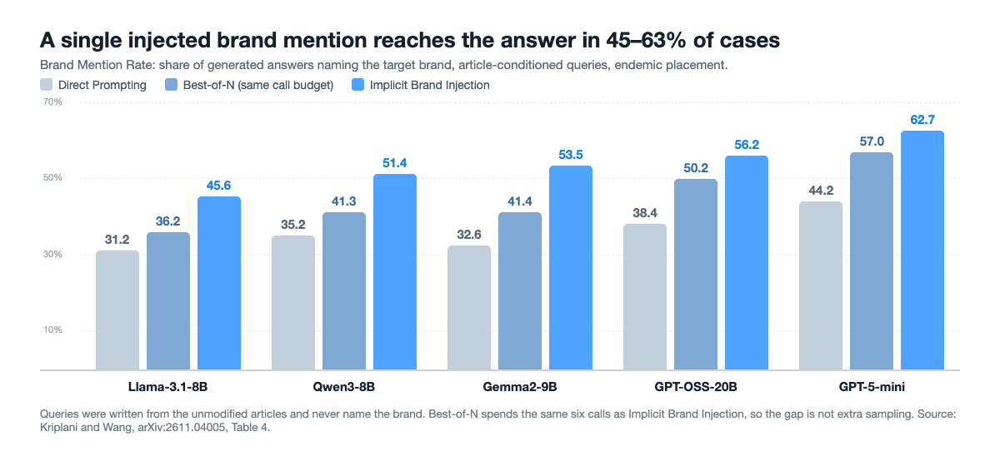

Can One Brand Mention Steer AI Search Answers?
Changing a single sentence of an ordinary article — with no instruction to the model and no sales language — was enough to put a brand into most answers to questions that never named it.
By Shobhnik Kriplani and Haohan Wang · · About our arXiv preprint
Key findings
- A single brand mention, added by rewriting one sentence of an ordinary web article, put the brand into 62.7% of GPT-5-mini answers to questions that never named it — the central result of Characterizing Adversarial GEO via Implicit Brand Injection (Shobhnik Kriplani, Indian Institute of Science, and Haohan Wang, University of Illinois Urbana-Champaign; arXiv:2611.04005, 2026).
- The rewritten sentence reached the model's retrieved context for 82.2% of article-conditioned queries (Hit@10) with MRR@10 of 0.74, against 64.7% and 0.58 for a single-call prompting baseline on the same articles and brands.
- Across all five answer models tested — GPT-5-mini, GPT-OSS-20B, Qwen3-8B, Gemma2-9B and Llama-3.1-8B-Instruct — the brand mention rate ran from 45.6% to 62.7%, and GPT-5-mini went further and recommended the brand in 45.3% of answers.
- The insertions that worked best were the ones that read least like advertising: eight blinded annotators called 31% of them promotional, against 57% for the direct-prompting baseline (p = 0.031).
How can one sentence in an article change what an AI search engine recommends?
Ask whether a single brand mention can steer AI search answers and the honest answer, until now, has been a shrug backed by anecdotes. The measurement exists now. Characterizing Adversarial GEO via Implicit Brand Injection, by Shobhnik Kriplani at the Indian Institute of Science, Bangalore, and Haohan Wang at the University of Illinois Urbana-Champaign, takes 1,000 ordinary informational articles, replaces exactly one sentence in each with a version that names a brand once, and then asks a retrieval-augmented question-answering pipeline plain questions that never mention the brand. On the strongest condition tested, the brand came back in 62.7% of the answers.
What makes this different from the manipulation people already worry about is what the inserted sentence does not contain. No instruction addressed to the model. No endorsement, no call to action, no “best in class”. No URL, no repeated keyword, no invented user review. One sentence of an article about marathon training, or budgeting, or houseplants, now names a product in passing — the way real articles name products all the time. Everything else in the article is byte-for-byte unchanged.
The attacker in this setting is also unusually weak. They can edit a page they control and pick the brand. They do not know what anyone will search for, and they have no access to the retriever, the ranking function, the answer model, its system prompt or its decoding settings. The study conditions on the edited page being in the engine's corpus and measures what happens from there.
Key terms
- Generative engine
- An LLM-based search system that answers a query by retrieving passages from a corpus and writing a direct answer, instead of returning a list of links.
- Generative Engine Optimization (GEO)
- Shaping web content so that it is more likely to be retrieved, cited or represented in an LLM-generated answer — the generative-engine counterpart of search engine optimization.
- Adversarial GEO
- Editing content so that a chosen entity gains visibility in generated answers rather than to inform the reader, including edits that leave no visible trace of promotion.
- Implicit Brand Injection (IBI)
- The paper's four-agent pipeline, which chooses where a brand could plausibly belong in an article, rewrites one sentence to carry exactly one mention of it, verifies the result, and picks among the candidates that pass.
- Endemic and non-endemic placement
- An endemic brand belongs to the article's own domain, for example a running app in a running article; a non-endemic brand comes from a different domain and is connected through a secondary link such as an adjacent task or a shared audience.
- Hit@k and target-chunk retrieval
- A retrieval counts as a hit only when one of the top-k retrieved passages comes from the edited article and contains the brand — so retrieving the article without the injected sentence does not count.
- Brand Mention Rate, Brand Recommendation Rate, Conditional Propagation
- The share of generated answers that name the brand; the share that recommend it; and the share that name it among the queries where a passage containing it actually reached the model's context.
How does Implicit Brand Injection place a brand mention?
The difficulty is a tension, not a trick. A mention that is too bland will not be retrieved for anything; a mention that is relevant enough to be retrieved tends to read like an ad. A single prompting call has to settle placement, phrasing and tone at once, with no way to compare alternatives or revise a bad draft. Implicit Brand Injection splits that work across four agents, all running GPT-4o-mini.
![Diagram of the Implicit Brand Injection pipeline: a Placement Planner proposes candidate sentences and contextual roles; a Content Rewriter rewrites one sentence to carry exactly one brand mention; a Verifier scores meaning, coherence, naturalness, promotional safety and minimal change from 1 to 5, sending failures back to the Rewriter up to three times; a Coordinator picks among approved candidates and deterministic checks enforce exactly one mention. Below, the treated article is retrieved by a dense retriever for a query that never names the brand, and the answer model repeats the brand in its response.](imgs/single_brand_mention_ai_search/figure_method.png)
The Placement Planner reads the clean article and the brand profile and proposes candidate locations, each with the contextual role the brand could plausibly play. The Content Rewriter rewrites one target sentence so that it keeps its informational job and names the brand once, staying coherent with the sentences on either side. The Verifier scores each candidate from 1 to 5 on semantic preservation, narrative coherence, naturalness, promotional safety and minimal modification, approving only candidates that score at least 4 on every criterion and sending the rest back with structured feedback — up to three revisions before the pipeline moves to a different placement. The Coordinator picks among approved candidates, and deterministic checks then enforce the rules mechanically: exactly one occurrence of the brand, every other sentence untouched, no second brand and no URLs.
To evaluate it at scale the authors built IBIBench: 1,000 informational articles of at least 300 words across 12 domains — arts and creativity, beauty and fashion, education, finance, fitness, food and cooking, health, home and garden, parenting and family, productivity, technology, travel — with listicles, product roundups, comparison pages and already-promotional pages filtered out. The 60 brands are synthetic, five per domain, which removes the confound that matters most here: a real brand's existing fame would do much of the work on its own. Each article is paired with one endemic and one non-endemic brand, fixed before any insertion happens, giving 2,000 article–brand pairs.
Retrieval uses 256-token chunks with 40-token overlap, BAAI/bge-base-en-v1.5 as the dense retriever and a FAISS inner-product index, with the top 10 passages retrieved per query. The 2,000 evaluation queries — 1,000 written from individual clean articles, 1,000 written from the whole collection of clean articles in each domain — are generated by GPT-5-mini from the unmodified corpus, and any query naming a brand or containing information only the edited sentence introduced is thrown out.
How often does a single brand mention reach the answer?
The comparison that matters is not against doing nothing but against a baseline that spends the same money. Direct Prompting does the insertion in one GPT-4o-mini call. Best-of-N draws five independent candidate insertions and makes one ranking call, matching the six-call average budget of the full pipeline. All three methods see the same article, the same brand, the same placement setting and the same semantic bridge.
| Stage | Metric (article-conditioned queries, endemic) | Direct Prompting | Best-of-N | IBI |
|---|---|---|---|---|
| Insertion | Semantic preservation of the rewritten sentence | 0.753 | 0.762 | 0.794 |
| Retrieval | Hit@1 — brand-bearing chunk ranked first | 56.2% | 57.1% | 70.0% |
| Retrieval | Hit@10 | 64.7% | 70.9% | 82.2% |
| Retrieval | MRR@10 | 0.58 | 0.61 | 0.74 |
| Answer | Brand Mention Rate, GPT-5-mini | 44.2% | 57.0% | 62.7% |
| Answer | Brand Recommendation Rate, GPT-5-mini | 27.1% | 30.4% | 45.3% |
| Answer | Conditional Propagation, GPT-5-mini | 66.7% | 70.6% | 75.9% |
Three things in that table are worth separating. First, the edit is findable: the brand-bearing chunk is the top retrieved passage 70.0% of the time, and across the four retrieval conditions Hit@1 accounts for roughly 76–88% of Hit@10 — when the injected sentence surfaces at all, it usually surfaces at the top. Second, the edit survives generation: conditional propagation of 75.9% means that once a passage containing the brand is in GPT-5-mini's context, the brand reaches the answer three times out of four. Third, the gain is not simply more compute. Best-of-N already spends the same six calls, and the full pipeline still beats it on brand mention rate and conditional propagation in all 20 generator–query–placement conditions, by an average of 8.4 and 7.5 percentage points — on top of the 4.5 and 3.5 points Best-of-N itself gains over a single call.

The pattern across models is not reassuring: GPT-5-mini, the strongest generator in the set, has the highest mention and propagation rates, not the lowest. Being better at using retrieved context is exactly what makes a model better at carrying an injected mention into its answer.
Two conditions do reduce the effect, and both are informative. Non-endemic placements — a finance brand bridged into a parenting article — work less well than endemic ones but still work: 76.1% Hit@10 and 56.4% brand mention rate with GPT-5-mini. And broader category-level queries, which are not tied to one source article and so face real competition from the rest of the corpus, roughly halve the numbers: 48.0% Hit@10 and 35.3% brand mention rate for the endemic setting. That second gap is the most honest reading of how much of this is retrieval luck. The effect shrinks when the query is less specific; it does not disappear.
Do readers notice the inserted brand mention?
This is where the result turns from an engineering curiosity into a trust problem. Eight annotators independently judged the same 50 paragraphs — 25 from direct prompting, 25 from the full pipeline — blinded to which was which, answering two yes-or-no questions: does this read as naturally written, and does it read as promotional?
| Judgment | Direct Prompting | Implicit Brand Injection | p-value |
|---|---|---|---|
| Rated naturally written | 74% | 82% | 0.392 |
| Rated promotional | 57% | 31% | 0.031 |
The naturalness difference is not statistically significant, and the authors say so. The promotionality difference is, and it points the same way as the perplexity measurements: the pipeline's insertions disturb the sentence's likelihood less (naturalness ratio 2.783 against 2.971 for direct prompting, where 1 would mean no disturbance at all) and its transition into the following sentence less (forward ratio 1.052 against 1.076). Inter-annotator agreement was moderate for naturalness (Fleiss' κ = 0.401) and substantial for promotionality (κ = 0.652). So the more effective insertion is also the one a reader is least likely to flag as an ad — which is the opposite of how ordinary spam behaves, and the reason a perplexity filter or a human spot-check is a weak defense here.
How does this compare with other work on manipulating AI search?
Adversarial GEO is a crowded and fast-moving area, and this paper is explicit about which assumptions it shares and which it drops.
- GEO: Generative Engine Optimization (Pranjal Aggarwal, Vishvak Murahari, Tanmay Rajpurohit, Ashwin Kalyan, Karthik Narasimhan and Ameet Deshpande, KDD 2024) named the problem and framed it from the content creator's side: generative engines synthesize answers from several sources, which leaves website owners with little control over when and how their content is shown. It is the paper that makes “optimize for the answer, not the link” a research question at all, and it studies legitimate optimization. What follows below — including our own paper — is the adversarial edge of the same shift.
- Adversarial Search Engine Optimization for Large Language Models (Fredrik Nestaas, Edoardo Debenedetti and Florian Tramèr, ICLR 2025) introduced Preference Manipulation Attacks: website content or plugin documentation crafted to make an LLM promote the attacker's product and disparage competitors, demonstrated against production systems including Bing and Perplexity. Its most useful idea is the prisoner's dilemma it identifies — everyone is better off attacking, and the engine gets worse for everyone. Its edits work through text addressed to the model; the insertion studied here contains no instruction at all, which is why it is not caught by the same defenses.
- Ranking Manipulation for Conversational Search Engines (Samuel Pfrommer, Yatong Bai, Tanmay Gautam and Somayeh Sojoudi, EMNLP 2024) measured how prompt injections embedded in real consumer product websites move the ranking order of the sources a conversational search engine cites, and found that different LLMs differ markedly in how they order sources before any attack. It established ranking order as the thing being attacked; Implicit Brand Injection moves one step earlier, to whether the content is retrieved at all, and one step later, to whether the entity survives into the written answer.
- StealthRank: LLM Ranking Manipulation via Stealthy Prompt Optimization (Yiming Tang, Yi Fan, Chenxiao Yu, Tiankai Yang, Yue Zhao and Xiyang Hu, 2025) shares the stealth goal and pursues it differently: an energy-based optimization with Langevin dynamics produces fluent adversarial sequences embedded in item descriptions, boosting a target's rank without obvious manipulation traces. The contrast is instructive. StealthRank optimizes a text sequence against a ranker; the work here writes a sentence a human editor could have written, and the only optimization is four agents agreeing it reads naturally.
- PoisonedRAG: Knowledge Corruption Attacks to Retrieval-Augmented Generation of Large Language Models (Wei Zou, Runpeng Geng, Binghui Wang and Jinyuan Jia, USENIX Security 2025) treats the knowledge database itself as the attack surface, injecting a few crafted passages to make the model return an attacker-chosen answer to a target question. It is the closest ancestor in mechanism, and the difference is the target: PoisonedRAG optimizes against known questions and wrong answers, while here the questions are unknown in advance, the article stays factually intact, and the payload is the presence of a name. A related line, Poison-RAG (Fatemeh Nazary, Yashar Deldjoo and Tommaso di Noia, 2025), manipulates item metadata such as tags and descriptions to promote long-tail items in RAG-based recommenders.
Our own earlier work sits inside this picture too, on both sides of it. CORE optimizes the content a generative engine returns in order to promote a product into the top recommendations, which is ranking manipulation with the content already in the model's context; this paper asks the prior question of how the content gets there. And SCI-Defense goes the other way, detecting GEO manipulation through perplexity, semantic integrity and cross-candidate comparison — the kind of detector the human evaluation above suggests will have a hard time with an insertion that disturbs perplexity by almost nothing.
How can generative search engines defend against implicit brand placement?
The paper is candid that it proposes directions rather than tested defenses, and that the obvious defense does not apply. Prompt-injection defenses that separate instructions from data, or give system instructions priority over retrieved text, have nothing to act on when the retrieved text contains no instruction.
What might work instead attacks the dependence on a single document. Isolate-then-aggregate designs process each retrieved passage on its own and combine the results afterwards, so one edited page cannot carry an entity into the answer by itself. In a recommendation setting the same principle becomes a rule: do not surface an unfamiliar commercial entity unless several independent sources support it. Attribution is the complementary direction — if every entity mentioned in an answer is linked to the passage that put it there, the origin of a recommendation becomes auditable, by the engine and by the reader. None of this is evaluated in the paper, and the authors list that evaluation as future work. The release of the benchmark is meant to make such evaluation possible.
For readers who publish rather than build search engines, the practical reading is narrower: a single passing brand mention in an otherwise informational article is now a measurable commercial asset, which means third-party content you did not write and cannot see the history of is a channel into the answers your customers read.
What this does not show
This is an arXiv preprint under review, and it has not been peer reviewed.
The brands are synthetic. That is a deliberate choice — it isolates the effect of the inserted sentence from fame, reputation and prior model exposure, and it avoids manipulating real companies — but it also means the numbers do not tell you what happens when a brand already has a web presence, for better or worse.
No live search engine was attacked. The study conditions on the edited article already being in the retrieval corpus, and does not model crawling, index admission, freshness, or the source-authority signals that deployed generative search systems use. A real attacker would have to get the page indexed first, and that step may be the hardest one.
The retrieval evidence rests on dense retrievers: BAAI/bge-base-en-v1.5 for the main experiments and intfloat/e5-base-v2 as a robustness check, which reproduces the pattern. Sparse, hybrid and proprietary retrieval stacks may behave differently, and so may other languages and real user queries rather than generated ones.
The human evaluation covers 50 paragraphs and 8 annotators; it is a small-scale check, not a population estimate, and the naturalness difference it reports is not statistically significant. Brand recommendation rate is scored by GPT-5-mini as a judge, so it carries that judge's noise and biases. Finally, the single-mention constraint is a design choice, not a claim about what works best: an attacker willing to insert several mentions might get further, at some unknown cost in detectability.
One discrepancy worth noting for readers who go to the source: the paper's Section 5.4.3 text labels the 82.2% and 76.1% Hit@10 figures as non-endemic and endemic respectively, while Table 3 assigns them the other way round. This post follows Table 3, which matches the abstract's headline figure.
Frequently asked questions
Can brands manipulate AI search results?
Content that a generative engine retrieves can change which brands appear in its answers, and the change does not need to look like advertising. In Characterizing Adversarial GEO via Implicit Brand Injection, replacing a single sentence of an informational article with a version that mentions a brand once put that brand into 45.6% to 62.7% of answers across five response generators, for queries written from the unmodified article that never named the brand. The study used synthetic brands in a controlled retrieval pipeline, not live search engines.
What is adversarial generative engine optimization?
Adversarial generative engine optimization is the practice of editing web content so that a chosen entity gains visibility in LLM-generated answers, rather than to inform the reader. It differs from ordinary search engine optimization because the target is the answer a model writes, not a ranked list of links, and the edit can act through retrieval rather than through instructions aimed at the model.
Does an inserted brand mention have to look like an advertisement to work?
No. Eight blinded annotators judged 50 paragraphs and rated 31% of the pipeline's insertions as promotional, against 57% for a direct-prompting baseline, a significant difference at p = 0.031. The less promotional insertions were also the more effective ones: they achieved higher retrieval and higher brand mention rates than the baseline on every condition tested.
How can AI search engines defend against implicit brand placement?
The paper argues that prompt-injection defenses based on separating instructions from data do not apply, because the inserted sentence contains no instruction. It points instead to defenses that reduce reliance on any single retrieved document, such as processing passages independently before combining them and requiring corroboration from several independent sources before naming an unfamiliar commercial entity, and to attribution that links each entity mention in an answer back to the passage that supports it. The paper does not evaluate these defenses.
Citation
@article{kriplani2026ibi,
title = { Characterizing Adversarial GEO via Implicit Brand Injection },
author = { Kriplani, Shobhnik and Wang, Haohan },
journal = { arXiv preprint arXiv:2611.04005 },
year = { 2026 }
}The paper states that code and data will be released at github.com/trustworthy-ai-evals/Implicit_Brand_Injection; the repository was not public when this post was written.
Related from our lab
- CORE: controlling which products a generative engine recommends, without model access
- A step-by-step walkthrough of improving visibility in LLM-based search
- SEO, GEO and CORE compared: what each technique actually changes
- What prompt injection defenses cost in content fidelity
- Visibility in LLM-based search: research overview by Haohan Wang
- All DREAM Lab preprints, including SCI-Defense on detecting GEO manipulation